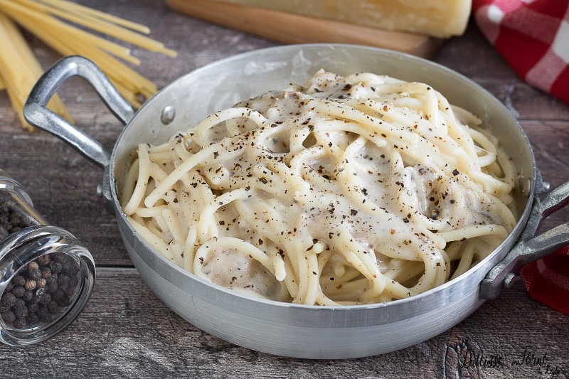

Cacio e Pepe

Cook: 25 mins
Total: 40 mins
Prep: 15 mins
Servings: 16
Yield: 16 servings
Description
An incredibly simple dish, requiring only two> ingredients.
Ingredients
- Spaghetti
- 3 and a half cups of Pecorino Romano cheese
- Salt to taste
- Pepper to taste
How to make it?
- Bring a 12-quart pot of heavily salted water
to a boil over high heat. Cook spaghetti in
the boiling water, stirring occasionally,
until tender yet firm to the bite, about 12 minutes.
Drain pasta, reserving 2 cups of cooking water.
- Return pasta and cooking water to the pot over
low heat. Add 3 1/2 cups Pecorino Romano cheese adding and
pepper. Stir until cheese has melted
and formed a creamy sauce, about 5 minutes.
- Serve with additional cheese and freshly ground , if desired.